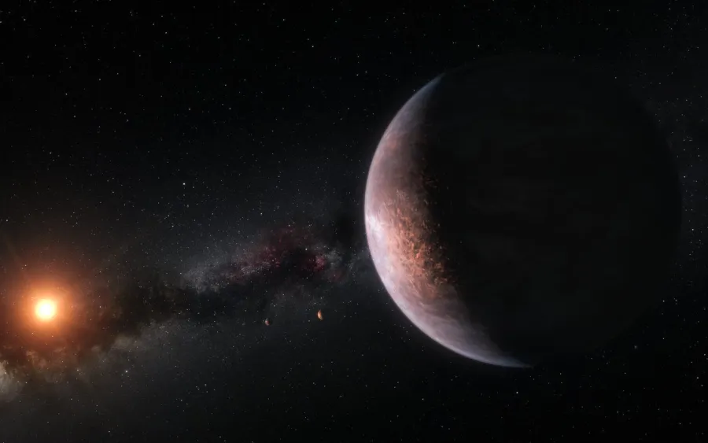

22. Januar 2021
Die sieben TRAPPIST-1-Planeten haben fast gleiche Dichten
Eine neue Auswertung lieferte die bis dahin genauesten Dichtemessungen für eine Gruppe von Exoplaneten. Die Dichten der sieben Planeten von TRAPPIST-1 unterscheiden sich um höchstens 3 Prozent. Die Planeten bestehen demnach vermutlich aus ähnlichen Anteilen derselben Materialien.
Sie sind aber etwa 8 Prozent weniger dicht, als sie es bei erdgleicher Zusammensetzung wären. Mögliche Erklärungen sind ein geringerer Eisenanteil (etwa 21 statt 32 Prozent wie bei der Erde), mit Sauerstoff zu Rost verbundenes Eisen oder – bei den vier äußeren Planeten – ein Wasseranteil von etwa 5 Prozent der Masse. Welche Erklärung zutrifft, ist offen.
Quelle: NASA/JPL: "The 7 Rocky TRAPPIST-1 Planets May Be Made of Similar Stuff.", 22.01.2021